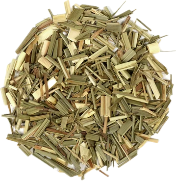

Lemon Grass
Cymbopogon citratus
Cymbopogon citratus
Overview
Lemon grass is a tall, perennial grass native to tropical regions of Asia, Africa, and Australia. It has long, slender leaves and a strong, lemony aroma and flavor. Lemon grass is prized for its culinary and medicinal uses and is commonly used fresh or dried in cooking and tea.
Cultural Overlap
Lemon grass is used in cuisines around the world, particularly in Southeast Asian, Indian, and Caribbean cuisines. It is used to flavor soups, curries, stir-fries, marinades, and beverages such as tea and cocktails. Lemon grass also has cultural significance in traditional medicine, where it is believed to have various health benefits, including digestive support, fever reduction, and pain relief.